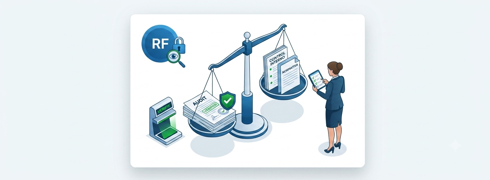
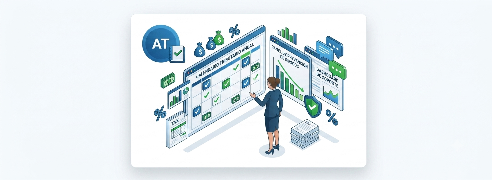
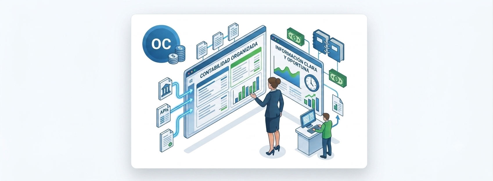
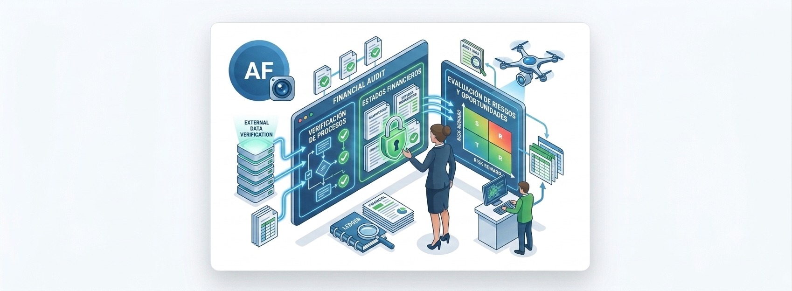
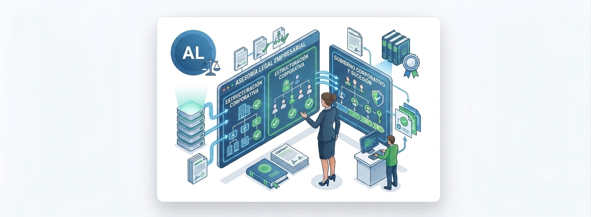
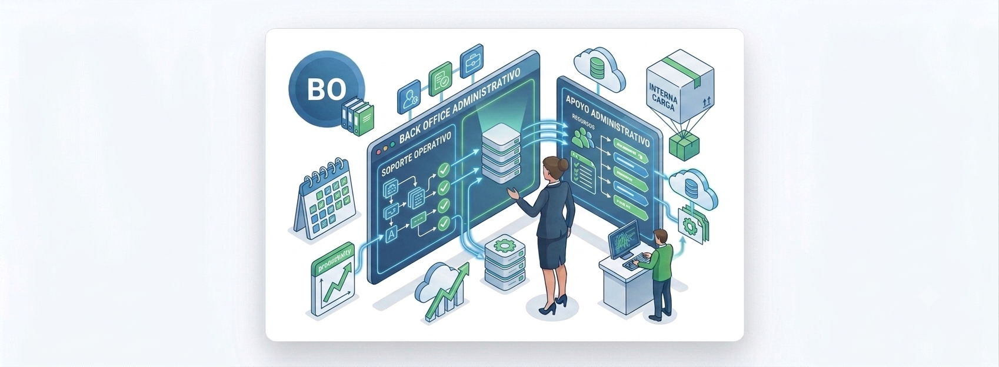

Revisoría fiscal
Cumplimiento normativo, revisión independiente, control interno y acompañamiento a la gestión.
Acompañamiento legal, contable, financiero y administrativo para reducir riesgos, ordenar procesos y fortalecer la toma de decisiones de su empresa.
Respuesta directa para evaluar su necesidad: revisoría fiscal, outsourcing contable, asesoría tributaria o auditoría.
Una muestra de cómo iniciamos la conversación con su empresa.
Soluciones con beneficios concretos para consultar por WhatsApp sin perder tiempo.

Cumplimiento normativo, revisión independiente, control interno y acompañamiento a la gestión.

Planeación, prevención de riesgos fiscales y soporte frente a obligaciones tributarias.

Gestión contable organizada para tomar decisiones con información clara y oportuna.

Evaluación de procesos, estados financieros, riesgos y oportunidades de mejora.

Soporte jurídico para empresas, grupos familiares, direccionamiento y sucesión patrimonial.

Apoyo operativo y administrativo para liberar carga interna y mejorar el control del negocio.
TIBUCORP acompaña organizaciones que requieren criterio técnico, continuidad y control.
Necesitan ordenar contabilidad, obligaciones tributarias y reportes financieros.
Buscan asesoría legal, sucesión, gobierno corporativo y planeación tributaria.
Requieren independencia, criterio técnico y acompañamiento permanente.
Quieren prevenir sanciones, errores contables y problemas ante entidades de control.
Un equipo con experiencia legal, tributaria, contable y de auditoría para orientar decisiones empresariales.
Director Jurídico
Abogado de la Universidad de La Sabana con más de 25 años de experiencia. Especialista en Comunicación Organizacional y Derecho Tributario. Doctor en Derecho de la Universidad de Salamanca.
Abogada y Contadora Pública · Gerencia Tributaria
Más de 15 años de experiencia en asesoría tributaria y auditoría, con enfoque integral en riesgos financieros, operativos y fiscales.
Revisor Fiscal
Contador público con experiencia en auditoría, revisoría fiscal, control interno, consultoría tributaria y gerencia tributaria.
Cuéntenos su caso por WhatsApp y le orientamos hacia el servicio adecuado para su empresa.
Contactar por WhatsApp